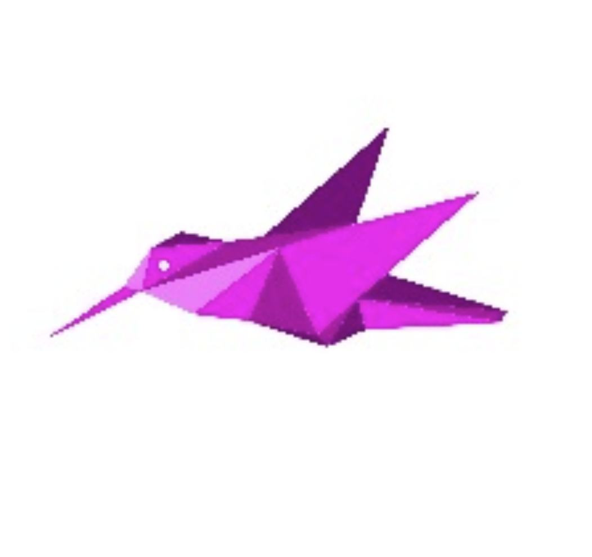
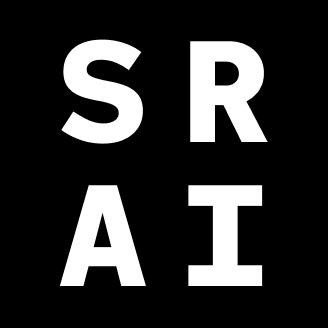

— Experience —
Founder & CTO
2024 – present

Vera AIAI lie detection for telecom scam protection. Bootstrapped startup building an MVP with a hired team, targeting pre-seed fundraising.
Founder & AI Consultant
2017 – present

South River AIIndependent AI consulting across real estate, automotive, e-commerce, and energy sectors.
- Shell Predictive models Real-time chemical reaction prediction using tabular ML.
- Volvo Cars Computer vision Driver attention & fatigue detection for ADAS systems.
- NVM LLM agent Automated property descriptions & search experience via LLM.
- Soyaka NLP Chinese-language NLP for social commerce analytics.
- OpenMined Privacy ML Privacy-preserving ML research and tooling contributions.
Principal AI Architect
2021–2023
Array Insights (MIT)
MIT startup for patient advocacy. Led a privacy-preserving ML platform, clinical trial advisory, and language model strategy.
Working with Kyburn?
Jaap is available as an AI Architect on select Kyburn engagements — bringing research-grade thinking to production systems.
Start a project →